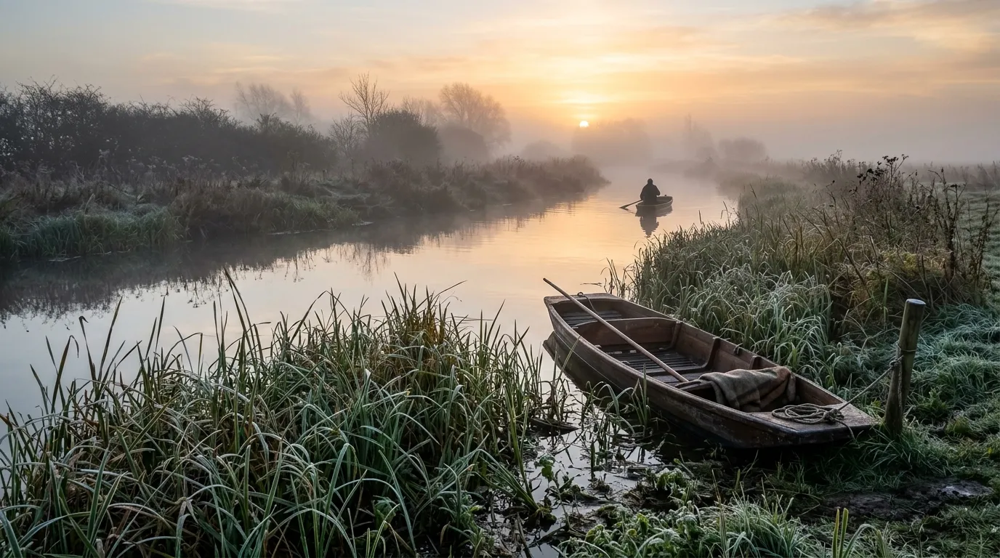
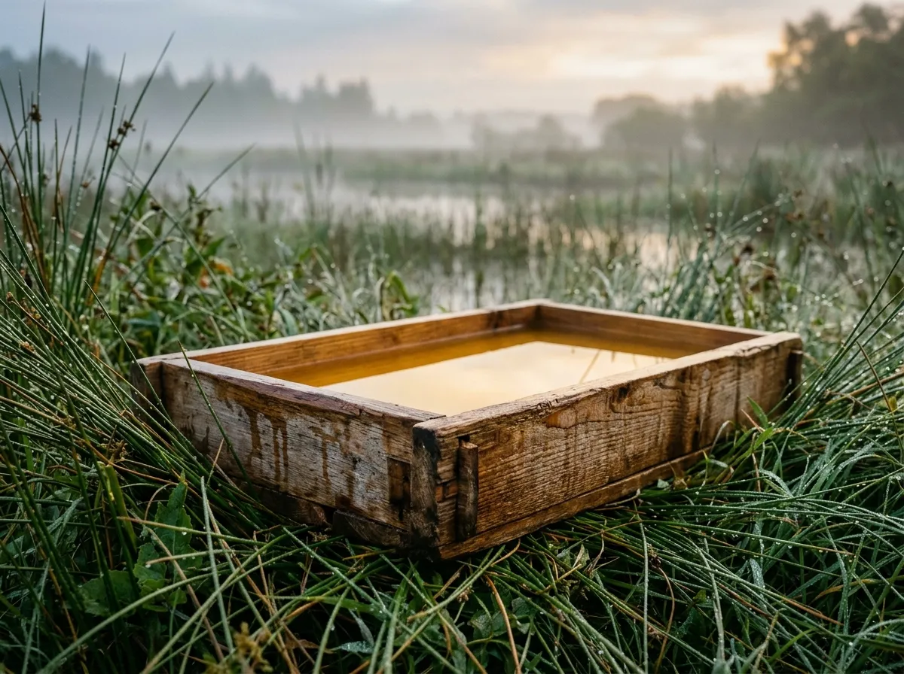
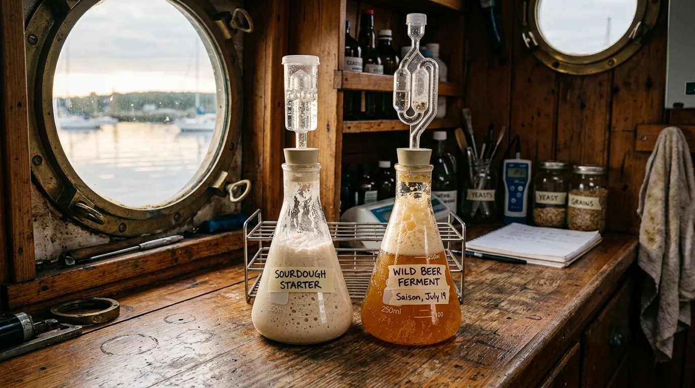

Wild Marshland Yeasts Captured Exclusively in Ephemeral Autumn Fog
Uncultivated spontaneous fermentation starters harvested during 72-hour radiation fog windows across the Cambridgeshire peat basins.
Commercial laboratory monocultures produce predictable, lifeless crumb structure and uniform beer profiles. We harvest living airborne microflora directly from wild sedge and water-mint during dense autumnal mist inversions when humidity peaks above ninety-six percent. Every mother flask is cold-stabilised within six hours of capture to preserve the complex volatile ester profile of the black fens.

The 72-Hour Fenland Inversion: Why We Only Harvest in the Mist
Between late September and the first hard November frosts, a unique micro-meteorological event blankets the low peat basins between Wicken Fen and Reach Lode. When daytime ground heat radiates into a clear night sky, cold air drains into the shallow peat cuttings, trapping a four-metre-deep blanket of saturating mist. This radiation inversion triggers an airborne spore release from wild dewberry brambles, marsh orchids, and bog myrtle that occurs at no other time of year.
Our capture skiffs navigate the lodes between two and five in the morning, deploying shallow cedar coolship cassettes containing unhopped heritage barley wort. The dense fog holds the temperature between four and seven degrees Celsius, suppressing common fungal spoilers while allowing cold-hardy, acid-tolerant wild saccharomyces and indigenous lactobacillus strains to inoculate the surface undisturbed.
By sunrise, as the marsh breeze burns off the mist, the cassettes are sealed and transferred to our barge laboratory. We do not isolate single strains into sterile industrial monocultures; we preserve the complete symbiotic ecology of the night's capture, delivering a resilient, terroir-driven fermentation engine that cannot be replicated in a commercial incubator.
Live Culture Registry
Our four flagship liquid wild fermentation starters, meticulously captured and cold-stabilised during distinct autumn radiation events. These living microflora cultures are exceptionally robust and are fully ready for immediate brewery pitching or sourdough mother building upon arrival.
Lode-Mist 04 Spontaneous Mother
Profile: High ester, prominent stonefruit and ripe apricot note.
Captured during the October 2024 Great Sedge Fen inversion. Perfect for nuanced seasonal farmhouse ales and experimental spontaneous fermentations.
£34.00 (500 ml live liquid pitch)
Wicken Bog Sourdough Mother
Profile: High acidity, robust 84% sourdough rise under cold proof.
An aggressive, sour-forward lactic culture isolated from sweet-bog agar trays. Outstanding for robust wholegrain baking.
£34.00 (500 ml live liquid pitch)
Black Fen Brettanomyces Blend
Profile: Leather, dried cherry, rich rustic earthiness.
Sourced from mature wild dewberry canes for complex secondary fermentations. Mimics deep barrel-aged lambic character.
£52.00 (500 ml live liquid pitch)
Reed-Bed Wild Saison Starter
Profile: 88% attenuation, very dry, complex phenolic finish.
A hyper-active mixed culture that excels in traditional heritage grain fermentations, producing extreme clarity and high attenuation.
£42.00 (500 ml live liquid pitch)
Micro-Climate Capture Protocol
Our extreme field precision is dictated entirely by regional weather patterns and rigid botanical cycles across the Cambridgeshire peat fens. We harvest only when meteorological data aligns with spore release thresholds.
- Fog Monitoring: We track barometric pressure and dew-point data using remote field sensors positioned deep within the Wicken Fen basin, awaiting the precise 72-hour autumn thermal inversion window.
- Coolship Deployment: Between two and five in the morning, our flat-bottomed skiffs navigate Reach Lode to deploy shallow cedar coolship cassettes filled with unhopped heritage barley wort into the saturating mist.
- Gravity Sedimentation: By sunrise, as the marsh breeze burns off the mist, cassettes are sealed and transferred. Initial gravity sedimentation separates heavy particulate while capturing the delicate airborne microflora pellicle.
- Cold-Chain Propagation: The active wild culture is rapidly transferred into sterile glass Erlenmeyer flasks and propagated under strict cold-chain conditions to preserve the volatile ester profiles prior to shipment.
Terroir Microbiology Matrix
Unlike domesticated single-strain laboratory cultures, our wild fenland consortia deliver complex, dynamic mixed-ferments that naturally enhance flavour depth and ambient preservation through deep symbiosis.
| Fermentation Parameter | Fenland Wild Consortia | Commercial Domesticated Strains |
|---|---|---|
| Cold Ferment Tolerance | Active metabolism and division down to 8°C | Highly dormant below 15°C |
| Lactic Acid Production | Dynamic pH drop to 3.4 (sharp, complex souring) | Static pH 4.2–4.5 (minimal to zero souring) |
| Complex Ester Formation | Rich stonefruit, aged leather, and wild botanicals | Uniform, predictable, often distinctly flat profile |
| Crumb Shelf-Life (Bakeries) | Natural mold inhibition and freshness up to 12 days | Noticeable staling and moisture loss within 48 hours |
Laboratory Dispatch & Viability Tiers
We supply freshly cultured liquid shipments with guaranteed live cell counts to small artisan bakeries, craft mixed-fermentation breweries, and institutional culinary research laboratories across the UK.
- Artisan Baker Pack 1 Litre active sourdough sponge. Ideal for establishing a permanent bakery mother culture capable of inoculating up to fifty loaves immediately.
- Commercial Brewer Pitch 5 Litre bulk liquid pitch (certified 1.2 billion cells/ml). Precisely sized and scaled for direct inoculation of 10-barrel commercial stainless fermenters.
- Fenland Guild Annual Cellar Allocation Quarterly seasonal subscriptions featuring limited experimental harvest blends and priority access to extremely rare late-autumn wild yeast captures.

Guild Field Notes & Endorsements
"The intense acidity from the Wicken Bog mother completely transformed our standard country loaf. The crumb holds moisture for over a week, and the depth of flavour is totally unmatched by any commercial starter we've tried in the last decade."
— Lead Baker, Cambridge Artisan Sourdough
"Pitching the Black Fen Brett blend into our oak foeders produced a remarkable leathery, tart cherry character within six months. It behaves exactly like a traditional Belgian lambic culture, but with a distinctly untamed East Anglian terroir."
— Head Blender, Norfolk Wild Ale Project
"We use the Lode-Mist 04 for all our experimental fermented pastry doughs. The vivid stonefruit esters it throws off at very low temperatures are incredibly vibrant, complex, and completely unique."
— Executive Pastry Chef, London Experimental Kitchen
Field Inoculation & Storage FAQ
How long do liquid cultures remain viable under standard refrigeration?
When stored strictly between 2°C and 4°C in their sealed shipping flasks, our pure liquid cultures maintain over ninety percent viability for up to eight weeks. After this period, we strongly recommend a light feeding regimen before conducting a large pitch.
What is the best protocol for maintaining the sourdough starter vitality?
For high-volume bakery environments, we advise a daily feeding ratio of 1:2:2 using organic stoneground wholemeal and filtered water. The culture thrives best when allowed to peak at ambient temperatures (20°C–22°C) before returning to overnight cold storage.
How do I manage the mixed fermentation souring rates in brewing?
Our wild saison and brettanomyces blends naturally include indigenous lactobacillus. To control the degree of souring, we recommend keeping primary fermentation temperatures below 18°C or limiting initial oxygen exposure, which heavily slows the lactic acid production.
What sanitisation protocols are necessary for your wild yeasts?
Treat these wild cultures with the same rigorous sterile technique as any commercial lab strain. However, owing to their aggressive competitive nature and high acidity, they can easily outcompete minor spoilers if pitched at the correct healthy cell count.
Do you provide winter shipment insulation?
Yes. All dispatches from November through March are packed in heavy-duty thermal EPS boxes equipped with heat-reflective baffling and phase-change gel packs. This fully prevents freezing and cellular damage during overnight transit.
Do these cultures meet strict organic certification standards?
Absolutely. Our wild capture substrates are comprised of one hundred percent organic heritage malt and sterile water. We do not use any synthetic nutrients, chemical washes, or artificial stabilisers at any point in the propagation cycle.
Harvest Requisition & Dispatch Terminal
Secure your seasonal wild inoculants direct from our floating laboratory. We offer guaranteed insulated 24-hour courier transport across the mainland UK, ensuring maximum live viability upon arrival.
The Fenland Yeast GuildReach Lode Mooring No. 4
Cambridgeshire, CB25 0JD